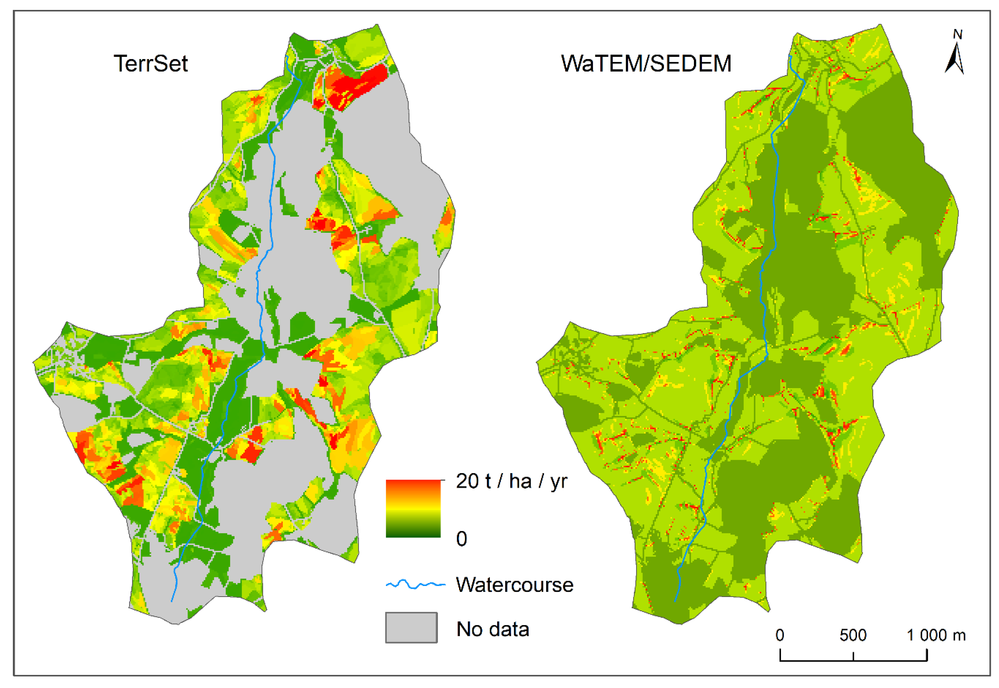

Soil Erosion Modeling
Estimate future soil loss using a variety of models. Identify hazards in the environment or make informed decisions about urban or agricultural development.
Optimal Site Selection

Optimal site selection takes into account the demand to locate
the best location given several facilities.
Service Area Analysis

In this type of network analysis, drive-time areas correspond to
the distance that can be reached within a specific amount of time.
Service Areas – Which houses are within 5, 10, and 15 minutes from
a fire station? This type of network analysis also can understand
where businesses cover and if there are any gaps.